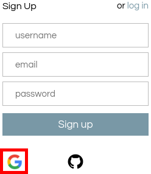
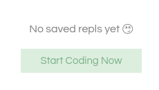
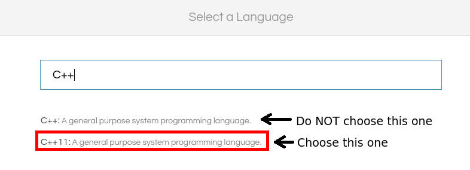
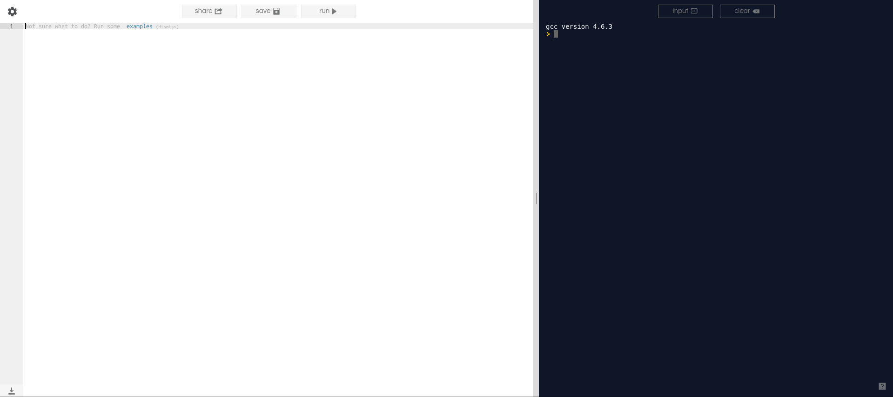

In this enrichment, you will learn how to apply logical thought processes to design algorithms and write computer programs. The best way to learn these skills is to apply them as you learn them, so it is very critical that you have an environment in which to program. For this enrichment, we will be using the online service repl.it to edit, run, and test your programs.
Creating an account
Accounts are free. Go to https://repl.it/signup and click on the Google icon:
On the next page, choose your bloomfield.org school email address, or click "Use another account" if it is not in the list, and log in. On the next page, grant repl.it access to the permissions it has requested. This should redirect you back to repl.it, with your fancy new dashboard.
Joining the class
I will write the invite URL on the board during class today (I will not be posting the URL here due to security concerns -- if you missed the first class, please send me an email at pcbonnen@umich.edu and I will send you an invite). Please type that URL into the browser and accept the invite. This is the repl.it classroom; the end-of-class exercises will be posted here for you to complete.
Opening a new REPL
Whenever a new concept is taught, you will first experiment with the related code in a coding walkthrough (which will be posted under Activities on the enrichment website). As I will not be collecting these, there will be no assignments posted in the repl.it classroom. In order to do these assignments, click on the "my repls" tab at the top (if not already selected):
At first, you will have no REPLs saved, so you will have to create a new one. Click on the "Start Coding Now" button:
On the following page, search for C++11, and click on it to open a new REPL. Note: Do NOT choose "C++". This will give you a REPL running on an older version of the C++ specification, and as a result some of the constructs you will learn in this class will not work.
Now, you will be presented with the REPL: A split screen with your code on the left and the output on the right. Be sure to name your REPL and save often! You can click "Run" to run your code.
Your assignments will also have the same generic interface.
Although I will not be collecting the code you write in these REPLs, I highly recommend that you create a separate REPL for each code walkthrough. If you don't, not only will all of the code for all of your activities be running one after the other when you click "run" (which may take some time!), but it will inevitably lead to messy code, which is bad.
To create a new REPL, return to the "my repls" tab. Your first REPL should now appear in the list (you can click on it to re-open it). Click on the "New REPL" button at the top, and follow the same language instructions as above.
What's a REPL?
You've seen this acronym being thrown around all over this page and over repl.it (even the URL has it!). Curious minds might be asking: what does REPL stand for?
REPL stands for Read, Evaluate, Print, Loop. The term doesn't apply as well to C++ as it does for other languages, but if the language is interpreted (i.e. an interpreter reads your source code and executes it directly, line-by-line) you can create an interactive prompt where you can enter individual, arbitrary language expressions, and the interpreter will evaluate those expressions, print the result, and then prompt you again (until you ask the interpreter to quit).
C++ is a compiled language, which means a program called the compiler reads the entirety of your source code and converts it into machine code (a *.exe file on Windows) that the computer can more readily understand. Because C++ was not designed to be executed on a source line-by-line basis, the concept of a REPL actually doesn't really apply here. (This service just extended its product to support compiled languages.)